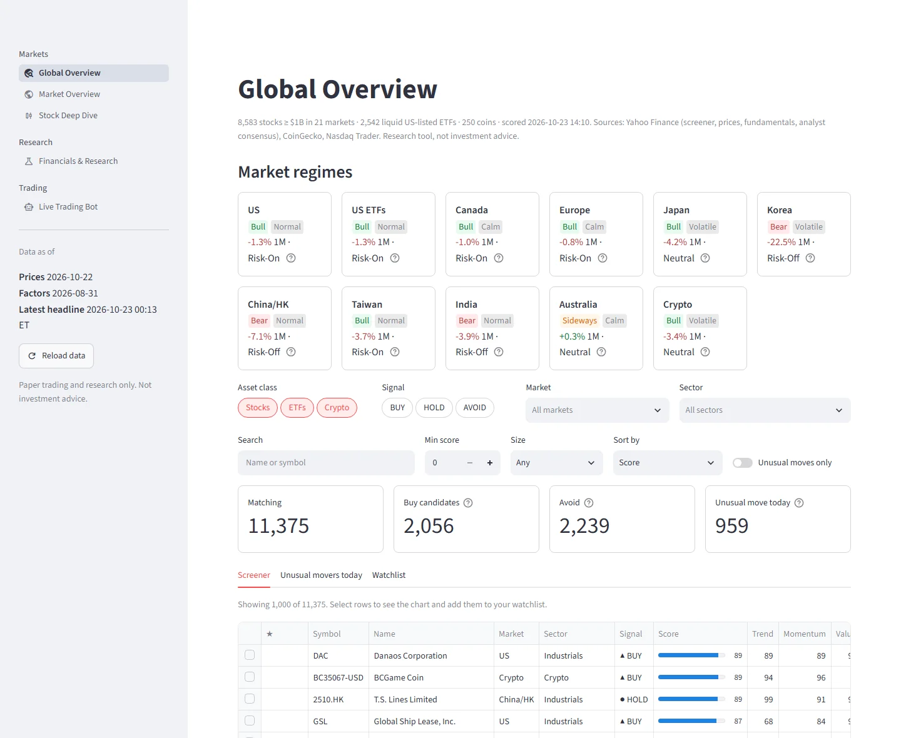
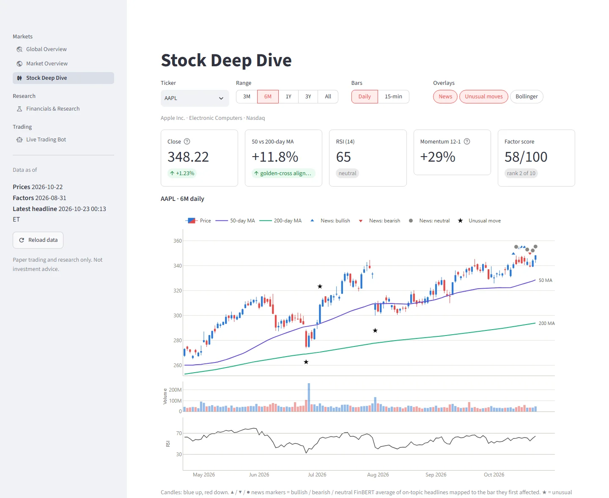
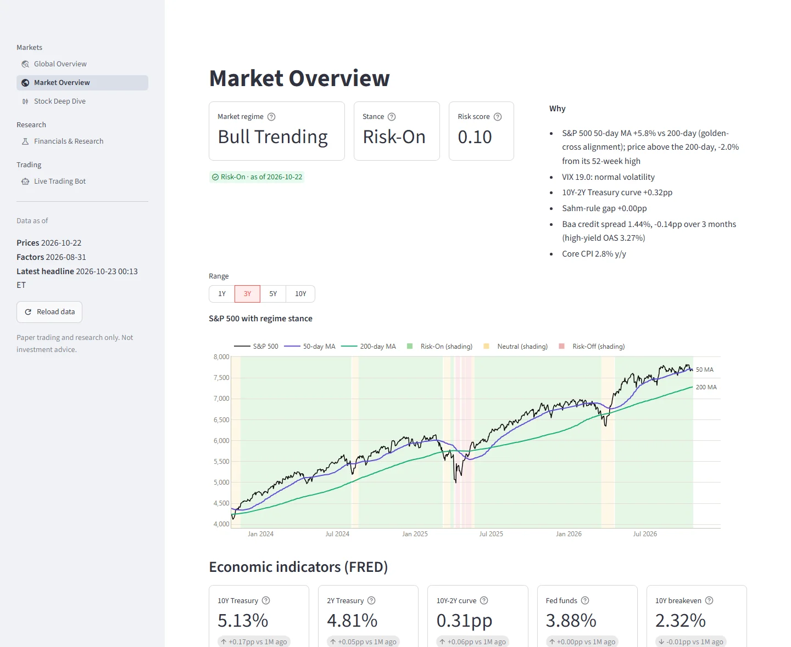
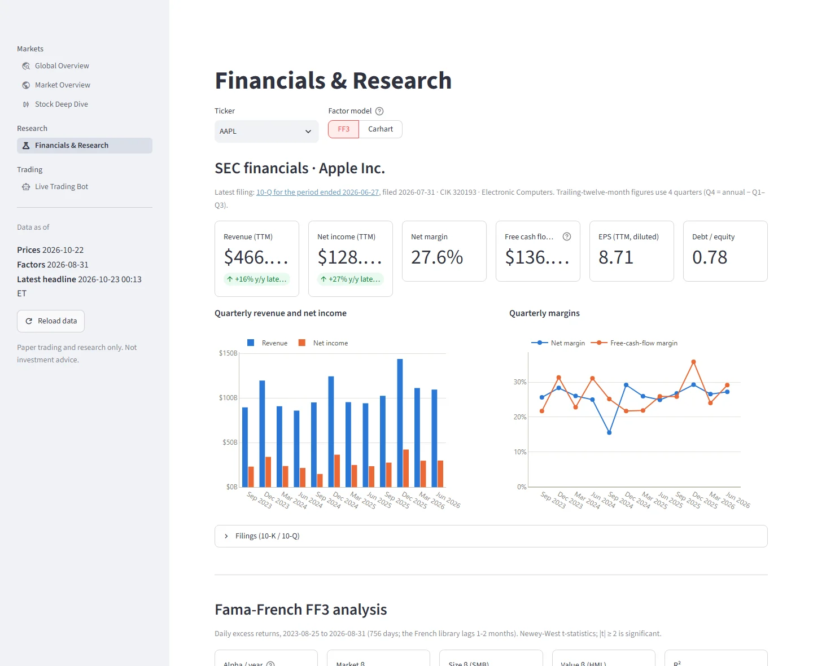

Stock, ETF and crypto research on free data only
Screen about 11,000 stocks, ETFs and coins around the world, dig into any company's chart, news and SEC filings, chart it live, and learn what quantum computers could and can't do for investors. No Bloomberg, no paid APIs, no API keys.

One Python codebase, from raw data to research
Everything runs on your own machine against one SQLite database. A scheduled daily job keeps it up to date.
Ingestion engine
Ten years of daily bars and 15-minute bars, FRED macro series, 10-K / 10-Q financials from SEC XBRL, headlines from four RSS feeds, and daily Fama-French factors. Re-runs fetch only what's new.
Indicators, regimes, explained moves
50/200-day averages, RSI, MACD and Bollinger bands. A Bull / Bear / Sideways regime with a Risk-On / Risk-Off stance. Unusual price moves matched to the headlines that came before them, filtered for relevance by company name.
Factor models and scores
Fama-French 3-factor and Carhart regressions with Newey-West t-stats, momentum and mean-reversion backtests, and a composite score combining SEC fundamentals, valuation and momentum.
Live charts
A TradingView-style chart drawn by the site: 26 indicators with editable inputs, drawing tools, TradingView's shortcuts and the indicator sets well-known traders use. Crypto streams from Binance; stocks refresh every 15 seconds.
Worldwide screener
Every stock of $1B or more in the US, Europe, the UK, Japan, Korea, China, Hong Kong, Taiwan, India, Canada and Australia, plus liquid ETFs and the top coins. Each is ranked against its peers, with a one-line reason for its signal.
Honest backtesting
An optional point-in-time S&P 500 universe that includes companies later removed from the index, so results aren't flattered by hindsight. Every result in the README is reported, including the bad ones.
Four views, one database
A Streamlit and Plotly dashboard reads the same database the pipeline updates. Charts use one colorblind-safe palette in both light and dark mode.







What the backtests actually show
Strategies were first tested on 10 hand-picked mega-caps. That flatters any strategy, because we already know those companies won. Re-run on the S&P 500 as it really was each day, including companies later dropped from the index, the edge disappears.
What we learned
- The momentum edge was hindsight. On the 10 mega-caps, long-only momentum showed +14.8% a year of alpha. On the point-in-time S&P 500 it is −2.2% (t −0.8).
- The composite score doesn't predict returns. Across about 480 stocks a month, its correlation with the next month's return is +0.006 (t 0.43). Quality comes closest, still below significance.
Why publish this
- A tool that only reports its wins can't be trusted. Every number here can be reproduced with the commands documented in the README.
- The platform is most useful for research and screening: seeing what's moving, why, and how a company's fundamentals and factor exposures compare with its peers.
Not investment advice. This is a research project. Scores rank names against their peers and are not predictions. Nothing here places orders.
Quantum computing for investors, explained honestly
The website's Quantum tab teaches how quantum algorithms work, from zero, then applies them to stocks: pricing options, measuring risk and choosing portfolios. Every quantum result sits next to the classical method it would have to beat.
What's on the page
- Learn by doing. A qubit lab with a 1-5 qubit circuit simulator and an animated Grover search, running in your browser.
- Real stocks. Option prices by Black-Scholes, Monte Carlo and amplitude estimation; VaR and CVaR for a basket; an efficient frontier; and a "hold K stocks" problem solved by brute force and by QAOA.
- Honest verdicts. A readiness scorecard, why it isn't ready yet, a security note on post-quantum cryptography, a glossary, a 9-week study path and checked references.
Data and limits
- Simulated, not run on a quantum computer. Each night Qiskit simulates the circuits on the PC that publishes the site, in about 2.5 minutes. Every quantum number is labelled "Simulated on a classical computer – educational, not a trading signal".
- The site's own inputs. Daily closes and FRED's 3-month T-bill yield: no new data sources and no keys.
- Tiny circuits. 32 price points and 6 stocks. At this size amplitude estimation needs about as many queries as Monte Carlo needs samples, and QAOA does no better than a random valid portfolio. As of 2026 no practical quantum advantage on a real finance problem has been shown.
Run it on your own machine
Developed and tested with Python 3.14 on Windows. The first data load downloads ten years of prices and the FinBERT model (about 440 MB), and later runs only fetch what's new.
Install
git clone https://github.com/chanwoo777/quant-platform.git
cd quant-platform
python -m venv .venv
.venv\Scripts\activate # macOS/Linux: source .venv/bin/activate
pip install -r requirements.txt --extra-index-url https://download.pytorch.org/whl/cpu
copy .env.example .env # macOS/Linux: cp; then set SEC_USER_AGENTThe SEC asks every client to identify itself, so set SEC_USER_AGENT in .env to your name and email address.
Load the data
python -m quant.ingestion.pipeline # prices, macro, factors, SEC filings, news
python -m quant.universe.refresh # the global screener (~30 min the first time)Open the dashboard
streamlit run dashboard/app.py # http://localhost:8501Keep it up to date (optional)
python -m quant.scheduler # refresh everything daily after the US close
python -m quant.web.publish # export the website and push it to GitHub Pages